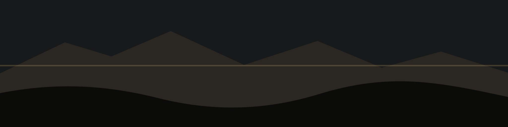
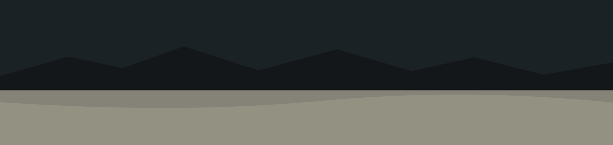

Fine Art Landscape Photography
Quiet Light, Wide Places
A photography-first portfolio for contemplative landscapes, open coastlines, deep forests, and panoramic work made to breathe on the screen.

Selected Work
Each gallery is arranged for original aspect ratios, full-screen viewing, and generous spacing so the photographs remain the main event.

Panorama Support
Built for Wide Frames
Ultra-wide images are detected and treated as full-width works. On small screens, the frame can scroll horizontally so the composition is not crushed into a strip.